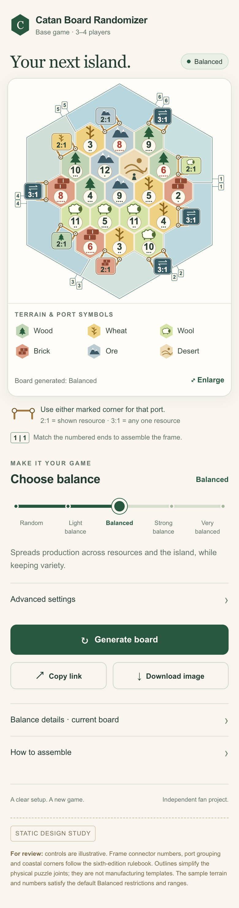
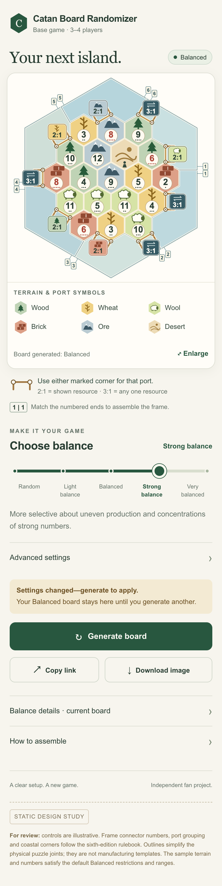
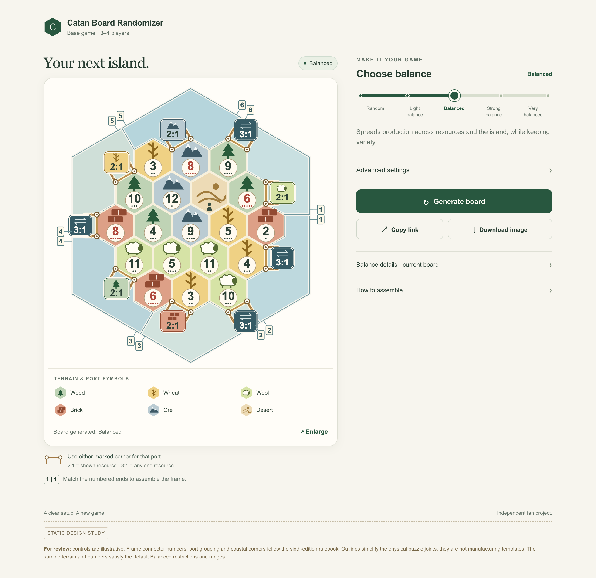
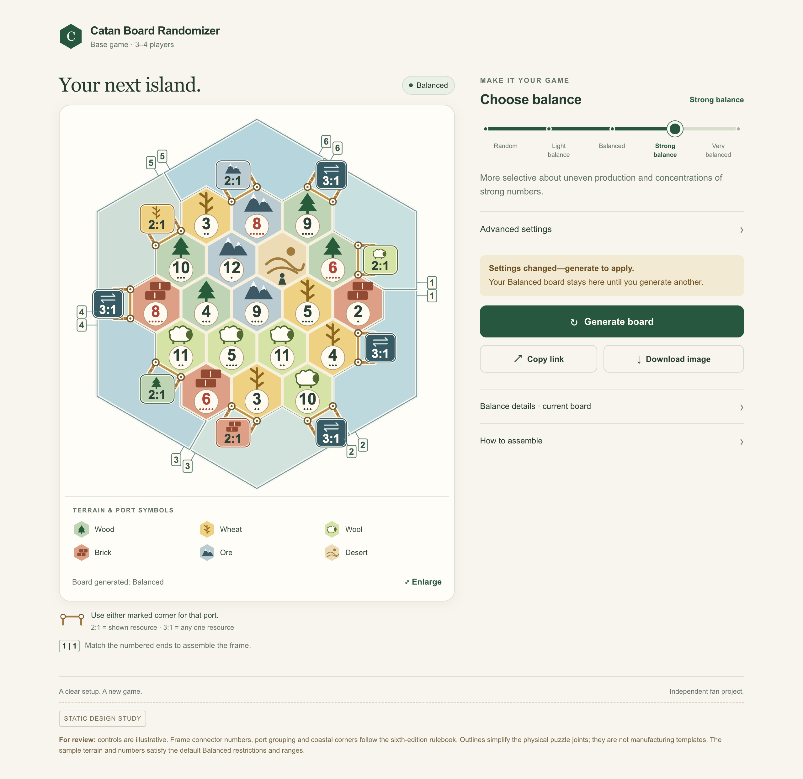

Catan Board Randomizer
First visual study · phone and desktop · generated and pending-settings states.
Static mockups. Buttons and slider do not operate. Connector numbers, port grouping, and coastal corners now follow the sixth-edition rulebook. Frame outlines are simplified schematics, not manufacturing templates.



